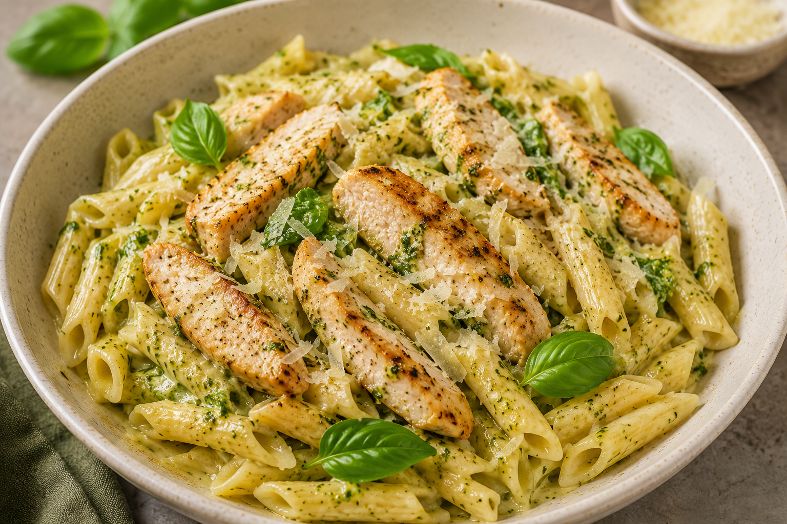

Krämig kycklingpasta med pesto

En krämig och smakrik vardagsrätt med saftig kyckling, pasta, pesto och parmesan. Enkel att laga och perfekt när middagen behöver bli klar snabbt.
Förberedelse: | Tillagning: | Total tid: | Svårighetsgrad: Enkel | 4 portioner
Näringsvärde per portion: 620 kcal | Protein: 42 g
Ingredienser
- 500 g kycklingfilé
- 400 g pasta
- 2 dl matlagningsgrädde
- 3 msk pesto
- 2 st vitlöksklyftor
- 50 g parmesan
- 1 msk olivolja
- Salt och svartpeppar efter smak
Till servering
- Riven parmesan
- Färsk basilika
Instruktioner
- Koka pastan enligt anvisningen på förpackningen. Spara cirka 1 dl av pastavattnet innan du häller av pastan.
- Skär kycklingen i mindre bitar och krydda med salt och svartpeppar.
- Hetta upp olivoljan i en stor stekpanna och stek kycklingen på medelhög värme tills den fått fin färg och är helt genomstekt.
- Finhacka vitlöken och tillsätt den i pannan. Fräs tillsammans med kycklingen i cirka 1 minut.
- Tillsätt matlagningsgrädde och pesto. Rör om och låt såsen sjuda i några minuter.
- Vänd ner den kokta pastan i såsen och blanda ordentligt. Tillsätt lite pastavatten om såsen behöver bli lösare.
- Rör ner parmesan och smaka av med salt och svartpeppar.
- Lägg upp pastan på tallrikar och toppa med parmesan och färsk basilika.